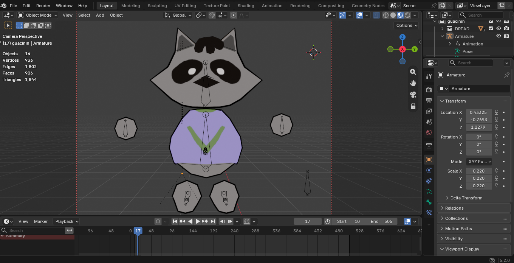

404!
Opa, essa página não foi encontrada!
Acho que o guaxinim não preparou esse link... Que tal voltar pra página inicial?

Opa, essa página não foi encontrada!
Acho que o guaxinim não preparou esse link... Que tal voltar pra página inicial?
